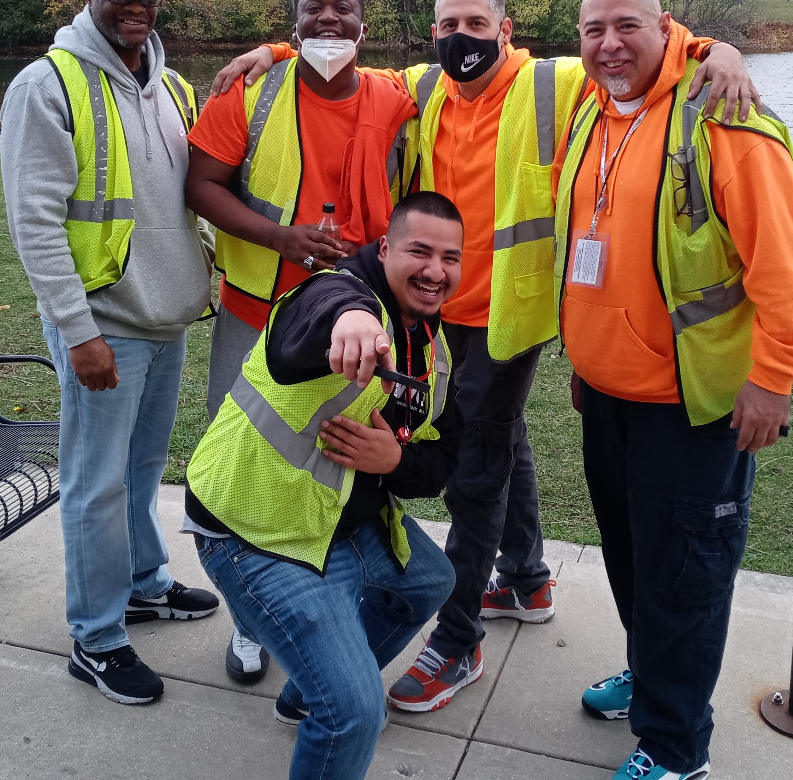

March 2, 2023
Armando Mancilla is a Senior Case Manager working for SWOPs safety team CP4P. He grew up in Chicago Lawn and although he currently resides in McKinley Park, he still considers Chicago Lawn to be close to his heart. Armando describes his work as providing wrap-around services for some of the most vulnerable people when it comes to violence. “We want to give them services that enable them to have better opportunities in the future. We believe this is one of the most long-term solutions to creating a better community in our neighborhoods.”
Armando speaks about how he has seen how cycles of violence can disenfranchise families in the community. “There hasn’t been a lot of support to protect and conserve our communities and I personally want to build on my mission to help others and show people that they can create the community they want.” Armando commented before speaking on the necessity for collaboration when working toward the goal of building a better community. He says his hope is that this work becomes a long-lasting pillar for this city so that it does not return to high rates of violence or recurring cycles of violence. “We want to become a trauma informed community so that we know how best to serve and work with our community members.”
When asked about what he would ask of their community, partners, and leaders Armando stated that he would ask people to increase their roundtables and have social practices such as participatory budgeting and processes that include those who are in the communities so that they can help eradicate violence and mental health crisis. He also hopes for increased transparency and accountability for what comes after the planning. In his final notes, Armando says, “Being in this work shows you all the different shades of issues and how we as an organization face it, and it is so much more complex when dealing with trauma that it challenges your views. It is always a good reminder to keep in mind when Rafi (Director of CP4P) says, “It’s Hard Work and It’s Heart Work”.